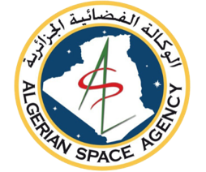
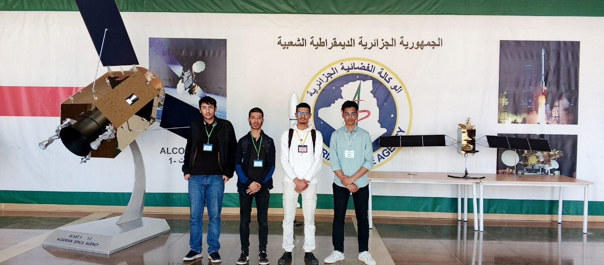

AI Incubator | ENSIA, Sidi Abdellah

Two-week research immersion at the Artificial Intelligence Incubator of Algeria's national space agency, hosted at ENSIA. The internship bridged academic training with applied AI research in space and aerial imagery analysis, combining structured courses, hands-on laboratory work, and an independent technical project.
Architected a complete multi-object tracking system achieving 32.9% MOTA and 49% IDF1 on the challenging VisDrone-MOT benchmark using YOLO detection + BoTSORT tracking.
Solved the critical domain-gap problem between ground-level and aerial imagery through a custom 3-stage training strategy with Mosaic augmentation and resolution enhancement.
Conducted discovery visit to CESTS Ouled Fayet, observing Alcomsat-1 operations, antenna management, spectrum allocation, and broadcast services.
Built NDVI temporal analysis maps (2000–2020) via Google Earth Engine and implemented semi-supervised land cover classification with noisy label robustness.
| Metric | Our Result | State-of-the-Art (FOLT) | Context |
|---|---|---|---|
| MOTA | 32.9% | 42.1% | VisDrone-MOT benchmark |
| IDF1 | 49.0% | 56.9% | Identity preservation score |
| ID Switches | 949 | ~600 | Lower is better |
Results are consistent with the established difficulty of VisDrone and represent meaningful improvement over near-zero out-of-the-box pre-trained model performance.
Passive vs. active sensing, spectral signatures, spatial/spectral/temporal/radiometric resolution, NDVI computation, satellite orbit mechanics (LEO vs. GEO).
Supervised/unsupervised/semi-supervised learning, CNNs vs. fully-connected networks, transfer learning, active learning, reinforcement learning, model evaluation strategies.
The Algerian Space Agency (ASAL) is Algeria's national public space institution, established in 2002. It operates the ALSAT Earth observation constellation and Alcomsat-1 communications satellite. Key centers include CTS (Arzew), CDS (Bir El-Djir), CAS (Algiers), CESTS (Ouled Fayet), and the new Bougzoul Space Telecommunications Centre.